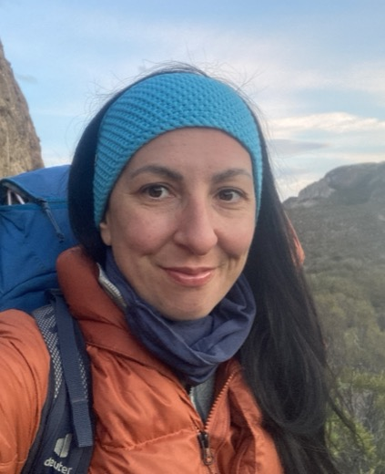

Research
Research interests, funded projects, teaching, supervision, fieldwork, reviewing, outreach, and service.
Read moreGlaciologist · Physicist · Ice-sheet modeller
Assistant Professor, Department of Geophysics, Universidad de Concepción, Chile.
Numerical modelling of glaciers and ice sheets, ice-ocean interactions, glacier hydrology, paleoclimatology, Patagonian ice fields, and climate change.
Download CV
I am a glaciologist and physicist specialized in numerical modelling of glaciers and ice sheets, ice-ocean interactions, glacier hydrology, and climate-driven glacier change. My research combines field observations, remote sensing, and three-dimensional thermo-mechanical ice-flow modelling to study glacier and ice-sheet evolution in Greenland, Antarctica, and Patagonia.
Assistant Professor, Department of Geophysics, Universidad de Concepción.
PhD in Physics, Complutense University of Madrid; MSc and BSc in Physics, University of Turin.
Research interests, funded projects, teaching, supervision, fieldwork, reviewing, outreach, and service.
Read moreSelected publications in Nature Communications, The Cryosphere, Journal of Glaciology, and other journals.
View publicationsWorkshops, meetings, and scientific events that I organize or coordinate.
Go to eventsInstitutional profile, Google Scholar, ResearchGate, ORCID, LinkedIn, Criosfera UdeC, GitHub, email, languages, and CV.
Contact and links